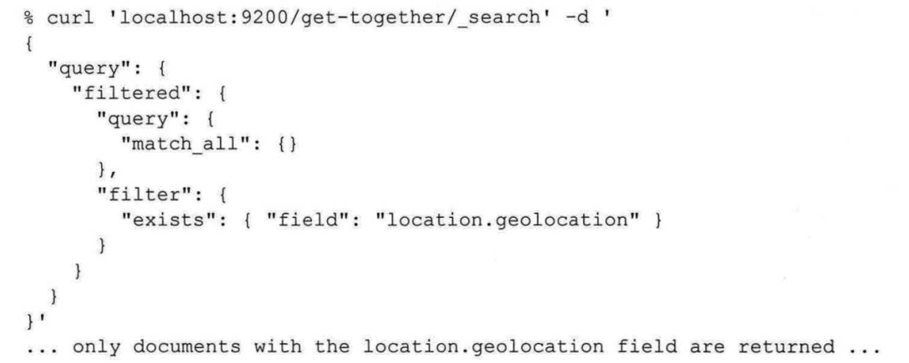
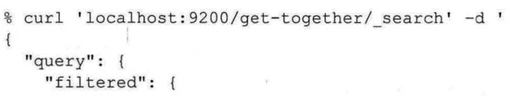
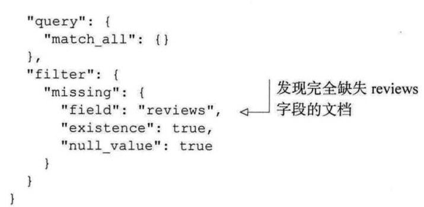

允许在单独的查询中组合任意数量的查询，指定的查询语句表名哪些部分是必须匹配（must）、应该匹配(should)或不能匹配(must_not)
和查询功能一致，但是同等情况下，推荐使用过滤器
用于查询介于一定范围之内的值，适用于数字，日期，字符串。
| 参数 | 含义 |
| :----: | :----: |
|gt | 搜索大于某值的字段，不包括该值本身
|gte | 搜索大于某值的字段，包括该值本身
|lt | 搜索小于某值的字段，不包括该值本身
|lte | 搜索小于某值的字段，包括该值本身
使用range查询时，请仔细考虑一下过滤器是否为更好的选择。由于在查询范围之中的文档是二元的匹配(“是的，文档在范围之中”或者“不是，文档不在范围之中”),
range
查询不必是查询。为了获得更好的性能，它应该是过滤器。如果不确定使用查询还是过滤器，请使用过滤器。在99%的用例中，使用range过滤器是正确的选择。
和term查询类似，prefix 查询和过滤器允许你根据给定的前缀来搜索词条，这里前缀在搜索之前是没有经过分析的。例如，为了在索引中搜索以“liber” 开头的全部活动。
字面意思，通配符查询，可使用 *，?来匹配任意字符。
正如其名，exists 过滤器允许你过滤文档，只查找那些在特定字段有值的文档，无论其值是多少。exists 过滤器看上去是这样的

missing 过滤器
-----------
missing过滤器让你可以搜索字段里没有值，或者是映射时指定的默认值的文档(也叫作null值，即映射里的nul1_ value)。 为了搜索缺失reviews字段的文档，可以使用下面这样的过滤器:


常用案例中使用哪些类型的查询
|用例 | 使用的查询类型|
| :----: | :----: |
|你想从类似Google的界面接受用户的输入，然后根据这些输入搜索文档 |如果想支持+/-或者在特定字段中搜索，就使用match查询simple query_ string查询|
|你想将输入作为词组并搜索包含这个词组的文档，词组中的单词间也许包含一些间隔(slop)| 要查找和用户搜索相似的词组，使用match phrase查询，并设置一定量的slop|
|你想在not_ analyzed字段中搜索单个的关键词，并完全清楚这个词应该是如何出现的| 使用term查询，因为查询的词条不会被分析
你希望组合许多不同的搜索请求或者不同类型的搜索，创建一个单独的搜索来处理它们 使用bool查询，将任意数量的子查询组合到一个单独的查询|
|你希望在某个文档中的多个字段搜索特定的单词| 使用multi_ match查询,它和match查询的表现类似，不过是在多个字段上搜索|
|你希望通过一次搜索返回所有的文档 |使用match_all查询，在---次搜索中返回全部文档|
|你希望在字段中搜索一定取值范围内的值| 使用range查询，搜索取值在一定范围内的文档|
|你希望在字段中搜索以特定字符串开头的取值| 使用prefix查询，搜索以给定字符串开头的词条|
|你希望根据用户已经输入的内容，提供单个关键词的自动完成功能| 使用prefix查询，发送用户已经输入的内容，然后获取以此文本开头的匹配项|
|你希望搜索特定字段没有取值的所有文档| 使用missing过滤器过滤出缺失某些字段的文档